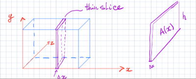
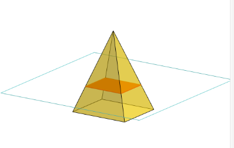
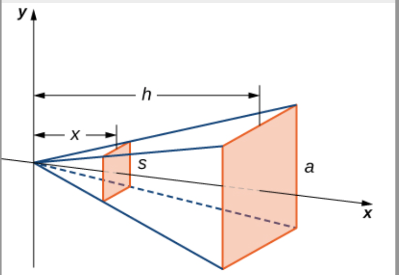
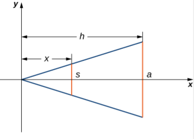
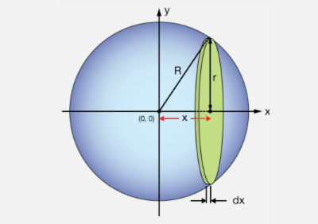
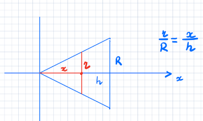

Our next geometric application of integration will be to find volumes of three-dimensional figures. Recall how we computed areas using integrals: first we approximate the area of the region with rectangles, then take more and more rectangles and, in the limit, we end up with an integral.
Similarly, we can approximate the volume of a three dimensional figure with thin slices of the figure, each of whose volume is \(A \cdot \Delta x\) where \(A\) is the area of one side of the thin slice, and \(\Delta x\) is the thickness of that slice.

Adding up the volumes, you get a Riemann sum:\[V \approx \sum_{i=1}^{n} A(x_i) \Delta x\] As \(n \rightarrow \infty\), this becomes an integral: \(\displaystyle \int_{a}^{b}{A(x)) \, dx}\), where \(A(x)\) is the area of the “slice” at \(x\).

We know from geometry that the formula for the volume of a pyramid is \(V=\frac{1}{3}Ah\). If the pyramid has a square base, this becomes \(V=\frac{1}{3}a^{2}h\), where \(a\) denotes the length of the side of the base. We are going to use the slicing method to derive this formula. We put the top of the pyramid at the origin with it’s heigth along the \(x\)-axis. The question is what is the area of an \(x\)-th slice?

The base of the piramid is a square with the area \(a^2\). If we move left along the \(x\)-axis, we will be getting the slices smaller and smaller. To figure out the area of a crossesction as a function of \(x\) lets take a "side view" of the pyramid. From the side view we will see a two-dimensional triangle:

Since there are two similar triangles, we have a proportion: \(\frac{s}{a}=\frac{x}{h}\) or \(s=\frac{ax}{h}\). Therefore, the area of one of the cross-sectional squares is \(A(x)=s^2=\frac{a^2x^2}{h^2}\). Then we find the volume of the pyramid by integrating from \(0\) to \(h\): \[\begin{aligned} % <-- observe: 'flalign*', not 'align*' V & = \displaystyle \int_{0}^{h}{A(x) dx} & \\ & = \displaystyle \int_{0}^{h}{\frac{a^2x^2}{h^2} \, dx}=\frac{a^2}{h^2}\displaystyle \int_{0}^{h}{{x^2} dx}& \\ & = \frac{a^2}{h^2}\frac{x^3}{3}\Big|_0^h=\frac{1}{3}a^2h&\end{aligned}\] This is the formula we were looking for.
To find a volume of a solid by the slicing method do the following steps:
Take thin slices of 3D figure
Find formula for \(A(x)\), the area of one cross-section
\(V = \displaystyle\int_a^b A(x) dx\)
Problem:Derive the formula for the volume of a sphere of radius \(R\) (\(R\) is a fixed constant).

What is the formula for the area of the “slice” that’s \(x\)-units from the origin?
\(A = \pi(R^2 - x^2)\)
Multiply that area by a small “thickness” \(\Delta x\): \(\pi (R^2 - x^2) \Delta x\)
Add all of these up and take the limit as \(\Delta x\) goes to \(0\)
The formula we get is \(V = \displaystyle\int_0^R \pi (R^2 - x^2)\,dx\). Evaluate this integral?
Problem:Derive the formula for the volume of a (right-circular) cone whose base has a radius \(R\) and whose height is \(h\).
Cross sections are circles
Area of a circle: \(\pi r^2\)
Radius of circle at height \(x\)?
Notice the similar triangles:

Solution:First we see that \(r = \frac{Rx}{h}\), so the area of that slice is \(\pi (\frac{Rx}{h})^2\). Set up the volume integral: \[\begin{aligned} V &= \int_0^h \pi (\frac{Rx}{h})^2 dx \\ &= \pi \frac{R^2}{h^2} \int_0^h x^2 dx \\ &= \left. \pi \frac{R^2}{h^2} \frac{x^3}{3} \right|_0^h \\ &= \pi \frac{R^2}{h^2} \frac{h^3}{3} \\ &= \frac{1}{3} \pi R^2 h\end{aligned}\] As expected!